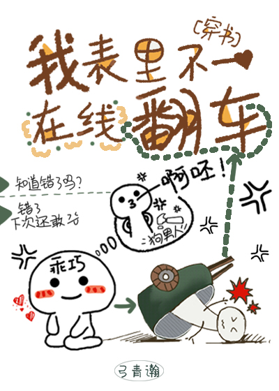

Li Qingzhou, que había estado enfermo durante muchos años, murió y fue vinculado sistemáticamente a una vieja novela romántica, donde se convirtió en el villano.
Este villano era hermoso, pero tenía una personalidad sombría y estaba en silla de ruedas con problemas en las piernas….
Li Qingzhou rompe a llorar y rueda por el suelo gritando: “¡No lo haré! ¡Me niego!"
Sistema: "Tu pierna estará bien tan pronto como completes la misión".
Li Qingzhou volvió a sentarse: “¿Qué misión? ¡Me lo llevo!"
La tarea: encontrar un amante para el tío del protagonista masculino, Liu Bohuai, para evitar que acabe solo.
Luego el sistema lo envió al libro y se fue, pero antes de irse, le arrojó un dedo dorado a Li Qingzhou, sin embargo, cayó sobre la persona equivocada...
Desde entonces, Liu Bohuai ha podido escuchar la voz en el corazón de Li Qingzhou y ver las burbujas de humor que se elevan desde lo alto de su cabeza.
[Un señor demonio frío y hermoso con un corazón de oro que está loco pero enfermo X un hombre cultivado, elegante y noble con el que nadie se atreve a meterse y que cree en la indiferencia de un Buda]